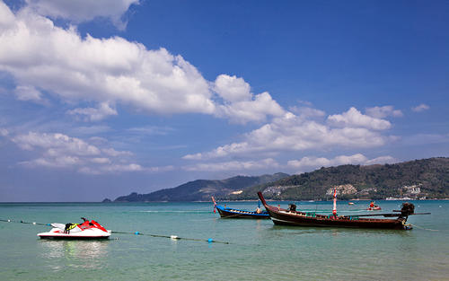

-
-
-
Day05-Day06
吴哥窟又称吴哥寺，位于柬埔寨，被称作柬埔寨国宝，是世界上 最大的庙宇类建筑，同时也是世界上最早的高棉式建筑。1992年联合国教科文组织将吴哥古迹列入世界文化遗产。 此后吴哥窟作为吴哥古迹的重中之重，成为了柬埔寨一张亮丽的旅游名片。 -
Day07-Day08
柬埔寨金边王宫是一组金色屋顶、黄墙环绕的建筑，包括曾查雅殿、金殿、 银殿、舞乐殿、宝物殿等大小宫殿二十多座，回廊上是仿吴哥寺的浮雕。曾查雅殿雕梁画栋，琉璃瓦顶， 同左侧金光闪烁的波列莫罗科特佛塔相呼应，景色壮观。金殿内有宝物殿，专门陈列珍宝。 - 
-
Day09-Day10
普吉岛是泰国最大的岛屿，大部分游客都聚集在芭东海滩或普吉镇上， 这是整个普吉岛的两个中心。一个胜在海岛风光，一个胜在古老的建筑， 却都因为有完善的各项服务而得到游客们的青睐。